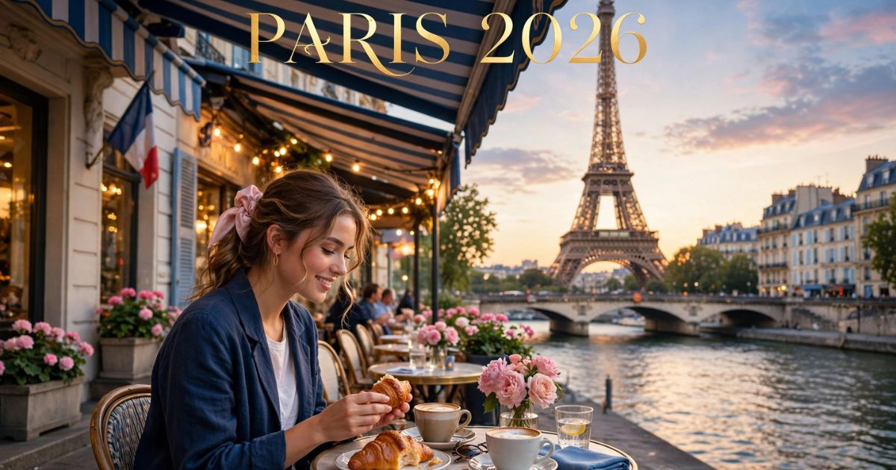

Paris 2026: guia completo para viajar para a Cidade Luz
Introdução: a cidade mais romântica do mundo
Paris é, sem dúvida, uma das cidades mais fascinantes e desejadas do planeta. Conhecida como a "Cidade Luz", a capital francesa encanta visitantes de todas as idades com sua arquitetura deslumbrante, sua rica história, sua gastronomia refinada e sua atmosfera romântica única. Seja para passear pelas margens do Rio Sena, subir na Torre Eiffel, visitar o Museu do Louvre ou simplesmente sentar em um café e observar a vida parisiense, a cidade oferece experiências inesquecíveis para todos os perfis de viajantes.
Em 2026, Paris continua sendo um dos destinos preferidos dos viajantes brasileiros. A cidade se prepara para receber turistas do mundo inteiro com uma infraestrutura cada vez mais moderna, mantendo seu charme histórico e sua essência única. Com a realização dos Jogos Olímpicos de 2024, a cidade passou por diversas melhorias que tornam a experiência do visitante ainda mais agradável.
Neste guia completo sobre Paris, você vai encontrar tudo o que precisa saber para planejar sua viagem: a melhor época para visitar, as atrações imperdíveis, os melhores bairros para se hospedar, como se locomover pela cidade, dicas de gastronomia, compras e muito mais.
Nosso objetivo é que você chegue a Paris preparado para aproveitar ao máximo cada minuto nessa cidade encantadora. Afinal, Paris é mais do que um destino — é uma experiência que fica gravada na memória para sempre.

A icônica Torre Eiffel, símbolo máximo da Cidade Luz
Melhor época para visitar Paris
Paris é uma cidade que encanta em todas as estações do ano, mas cada período oferece uma experiência única. A escolha da melhor época depende do que você busca na viagem.
Primavera (março a maio) — Uma das melhores épocas para visitar Paris. As temperaturas são amenas (entre 10°C e 20°C), as flores desabrocham nos jardins da cidade e os dias ficam mais longos. A cidade ganha vida após o inverno, com uma atmosfera vibrante e romântica. Os preços dos hotéis começam a subir com a chegada da alta temporada.
Verão (junho a agosto) — Época mais quente do ano, com temperaturas que podem ultrapassar 30°C. A cidade fica cheia de turistas, os preços são mais altos e as filas nas atrações são longas. No entanto, o verão oferece uma programação intensa de eventos, festivais ao ar livre, piqueniques às margens do Sena e as famosas noites de verão parisienses. É também a época dos jardins floridos e dos cafés com mesas na calçada.
Outono (setembro a novembro) — Muitos consideram o outono a melhor estação para visitar Paris. As temperaturas são agradáveis (entre 10°C e 22°C), as folhas das árvores se transformam em um espetáculo de cores douradas e alaranjadas, e a cidade oferece uma atmosfera charmosa e romântica. A alta temporada começa a diminuir após setembro, com preços mais acessíveis.
Inverno (dezembro a fevereiro) — O inverno em Paris é mágico, especialmente durante o Natal e o Ano Novo. As temperaturas podem cair abaixo de 0°C, com possibilidade de neve, mas a cidade se enche de luzes, decorações natalinas e mercados de Natal charmosos. É a época mais movimentada do ano, com preços altos e muita aglomeração. Para quem não gosta de frio, não é a melhor opção.
Dica: Se você busca um equilíbrio entre clima agradável e preços razoáveis, a primavera (abril/maio) e o outono (setembro/outubro) são as melhores escolhas. Evite os meses de dezembro (Natal) e junho/julho (alta temporada de férias) se quiser economizar.
O que fazer em Paris: atrações imperdíveis
Paris tem uma lista quase infinita de atrações. Separamos as imperdíveis para que você não perca nada:
Torre Eiffel — O símbolo máximo de Paris e da França. Visite a torre, suba até o topo (com agendamento antecipado) e aprecie a vista deslumbrante da cidade. A torre fica ainda mais bonita à noite, quando se ilumina com suas luzes cintilantes. Não deixe de fazer um piquenique no Campo de Marte, aos pés da torre.
Museu do Louvre — O maior museu de arte do mundo, lar da famosa Mona Lisa de Leonardo da Vinci. Com mais de 35.000 obras expostas, o Louvre é uma visita obrigatória para os amantes de arte e história. Reserve pelo menos meio dia para explorar o museu. A entrada pela pirâmide de vidro é uma experiência por si só.
Notre-Dame — A catedral gótica mais famosa do mundo, localizada na Ilha da Cité. Após o incêndio de 2019, a catedral passou por uma restauração completa e reabriu suas portas em 2024. A visita é imperdível — a arquitetura, os vitrais e a vista do topo são de tirar o fôlego.
Arco do Triunfo — Um dos monumentos mais icônicos de Paris, localizado no topo da Champs-Élysées. Suba até o topo para ter uma vista panorâmica da cidade, incluindo a Torre Eiffel. O monumento homenageia os soldados franceses que lutaram nas guerras napoleônicas.
Champs-Élysées — A avenida mais famosa do mundo, com suas lojas de luxo, cafés charmosos e o Arco do Triunfo ao fundo. Caminhe pela avenida, faça compras, sente em um café e observe a vida parisiense. À noite, a avenida ganha uma atmosfera ainda mais especial.
Montmartre e Sacré-Cœur — O bairro boêmio de Paris, com suas ruas de paralelepípedos, artistas de rua, cafés históricos e a bela Basílica de Sacré-Cœur. Suba as escadas da basílica para ter uma das melhores vistas de Paris. Passeie pelas ruas, visite a Place du Tertre e sinta a atmosfera única de Montmartre.
Museu d'Orsay — Um dos museus mais importantes do mundo, especializado em arte impressionista e pós-impressionista. O museu está instalado em uma antiga estação de trem, o que torna a visita ainda mais especial. Destaque para as obras de Monet, Manet, Renoir, Van Gogh e Degas.
Palácio de Versalhes — Localizado nos arredores de Paris, o Palácio de Versalhes é uma das residências reais mais suntuosas do mundo. Explore os aposentos do Rei Sol, os jardins imensos e a famosa Galeria dos Espelhos. Reserve um dia inteiro para essa visita.
Passeio de barco pelo Sena — Uma das experiências mais charmosas de Paris. Faça um cruzeiro pelo Rio Sena, passando por pontes históricas, monumentos icônicos e margens iluminadas. O passeio é especialmente bonito ao pôr do sol ou à noite, quando a cidade se ilumina.
Onde ficar em Paris: melhores bairros
Escolher onde se hospedar é uma das decisões mais importantes da viagem. Cada bairro de Paris tem sua personalidade, vantagens e desvantagens:
1º Arrondissement (Louvre / Châtelet) — O coração de Paris, onde fica o Museu do Louvre, a Place Vendôme e o Palais Royal. Ficar aqui significa estar no centro de tudo, com fácil acesso às principais atrações. Os preços são elevados e os hotéis são sofisticados. Ideal para quem quer estar próximo de tudo.
5º e 6º Arrondissements (Latin Quarter / Saint-Germain) — Bairros históricos e charmosos, conhecidos por suas ruas de paralelepípedos, cafés literários, livrarias e a atmosfera boêmia. São bairros vibrantes, com restaurantes, bares e uma vida noturna animada. É uma das melhores opções para quem busca uma experiência autêntica. Os preços são moderados.
7º Arrondissement (Tour Eiffel / Invalides) — O bairro da Torre Eiffel, um dos mais elegantes e residenciais de Paris. Ficar aqui significa ter a vista mais icônica da cidade. Os preços são elevados, mas a localização é excelente para quem quer estar perto da torre. Ideal para casais e viajantes que buscam romance.
8º Arrondissement (Champs-Élysées / Madeleine) — O bairro da avenida mais famosa do mundo. Ficar aqui significa estar perto das melhores lojas, restaurantes sofisticados e do Arco do Triunfo. Os preços são muito elevados e a região é bastante turística. Ideal para quem gosta de compras e luxo.
18º Arrondissement (Montmartre) — O bairro boêmio e artístico de Paris. Ficar aqui significa estar em um dos bairros mais charmosos e autênticos da cidade, com suas ruas íngremes, artistas de rua e a Basílica de Sacré-Cœur. Os preços são mais acessíveis que no centro, mas a localização é um pouco mais distante.
Dica: Para quem visita Paris pela primeira vez, o 5º e 6º Arrondissements (Latin Quarter) são uma excelente opção, combinando localização, charme e preços moderados. Para quem busca economia, Montmartre (18º) é a melhor escolha.
Como chegar a Paris
Chegar a Paris é fácil e há diversas opções a partir do Brasil e de outros destinos internacionais.
Avião — Principais aeroportos:
- Aeroporto Charles de Gaulle (CDG) — O principal aeroporto internacional de Paris. Recebe voos diretos do Brasil (São Paulo, Rio de Janeiro, Brasília) com companhias como Air France, LATAM e outras. Fica a cerca de 25 km do centro e tem excelentes conexões de trem e ônibus.
- Aeroporto Orly (ORY) — O segundo aeroporto de Paris, mais próximo do centro (cerca de 15 km). Recebe voos domésticos e internacionais de curta e média distância. Tem conexões de trem, ônibus e metrô (em breve).
- Aeroporto Beauvais (BVA) — Aeroporto secundário, utilizado principalmente por companhias low-cost como a Ryanair. Fica a cerca de 85 km do centro de Paris. Tem conexões de ônibus para a cidade.
Como ir do aeroporto ao centro:
- Charles de Gaulle: RER B (trem) para o centro (€ 11,45) em cerca de 30-40 minutos. Táxi/Uber: € 50-60.
- Orly: RER B + Orlyval (€ 12,10) ou ônibus (€ 8-10) para o centro. Táxi/Uber: € 35-45.
- Beauvais: Ônibus para o centro (€ 16) em cerca de 1h15. Táxi/Uber: € 100-120.
Visto e documentação: Brasileiros não precisam de visto para entrar na França para turismo (até 90 dias). No entanto, é necessário ter passaporte válido e comprovante de hospedagem e recursos financeiros. A partir de 2025, o sistema ETIAS (sistema europeu de autorização de viagem) pode ser exigido.
Transporte em Paris: como se locomover
Paris é uma cidade fácil de se locomover, com uma das redes de transporte público mais eficientes do mundo.
Metrô:
- 16 linhas de metrô cobrem toda a cidade de forma eficiente.
- Funciona das 5h30 à 1h da manhã (até as 2h nos finais de semana).
- Tarifa: € 2,15 por viagem (bilhete simples).
- Use o Navigo (cartão recarregável) ou bilhetes avulsos para pagar as viagens.
- Baixe o aplicativo de mapas do metrô (como Citymapper ou RATP) para se orientar.
Ônibus:
- Complementam o sistema de metrô, especialmente em áreas menos servidas pelas linhas subterrâneas.
- Mesma tarifa do metrô (€ 2,15).
- Alguns ônibus têm Wi-Fi gratuito.
RER (trem regional):
- Conecta Paris aos subúrbios e ao aeroporto Charles de Gaulle.
- Útil para viagens a Versalhes, Disneyland Paris e outros destinos nos arredores.
- Tarifa varia conforme a distância (€ 2,15 a € 11,45).
Táxis e aplicativos:
- Táxi: Tarifa inicial: € 4,00 + € 1,12 por km. Valores mais altos em horários de pico.
- Uber/Bolt: Disponíveis em toda a cidade. Geralmente mais baratos que táxis em viagens curtas, mas com preços dinâmicos em horários de pico.
Vélib (bicicletas):
- Sistema de compartilhamento de bicicletas com milhares de estações.
- Aluguel por dia: cerca de € 5-10.
- Ideal para passeios ao longo do Sena e pelos bairros históricos.
Dica: O metrô é a forma mais econômica e eficiente de se locomover em Paris. O sistema é extenso, cobre toda a cidade e funciona bem. Evite os horários de pico (8h-9h30 e 17h-19h) se não estiver com pressa.
Gastronomia em Paris: o que comer
Paris é a capital mundial da gastronomia. A cidade oferece uma experiência culinária incomparável, com restaurantes renomados, cafés charmosos e padarias que são verdadeiras instituições. Confira o que não perder:
Croissant e pão francês (baguette) — O café da manhã parisiense por excelência. Croissants fresquinhos e baguettes crocantes são encontrados em praticamente todas as padarias (boulangeries). Experimente a baguette tradicionale — a melhor da cidade — e os croissants amanteigados.
Macaron — O doce mais famoso de Paris, feito com merengue, amêndoas e recheio cremoso. Experimente na Ladurée, Pierre Hermé ou na Dalloyau. As cores vibrantes e os sabores variados fazem dos macarons uma experiência visual e gustativa única.
Crêpes — As famosas panquecas finas, servidas com recheios doces ou salgados. Experimente o crêpe Nutella-banana ou o tradicional crêpe com açúcar e limão. As melhores crêperies estão em Montparnasse.
Queijos franceses — A França é o país dos queijos, com mais de 400 variedades. Experimente o Camembert, Brie, Roquefort, Comté e muitos outros. Uma tábua de queijos com um vinho tinto é uma experiência obrigatória.
Vinhos franceses — A França é o país do vinho. Experimente um Bordeaux, um Bourgogne (Borgonha) ou um Champagne. Acompanhe com um prato francês para uma experiência completa.
Mercados gastronômicos:
- Marché des Enfants Rouges: O mercado coberto mais antigo de Paris, com opções de diversos países.
- Rue Montorgueil: Rua histórica com lojas de queijos, vinhos, doces e restaurantes.
- Les Halles: O famoso mercado de Paris, hoje transformado em um centro comercial e gastronômico.
Compras em Paris: o que levar para casa
Paris é um paraíso para os amantes de compras. Das lojas de grife aos mercados de pulgas, há opções para todos os bolsos e estilos.
Galeries Lafayette: A loja de departamentos mais famosa de Paris, com sua cúpula de vidro deslumbrante e uma vista incrível da cidade do terraço. Encontre marcas de luxo, moda, acessórios e beleza.
Champs-Élysées: A avenida mais famosa para compras de luxo. Encontre lojas da Louis Vuitton, Dior, Chanel, Tiffany & Co., Gucci e muitas outras. A visita à loja da LV na Champs-Élysées é uma experiência por si só.
Le Marais: Bairro com lojas conceito, boutiques independentes, designers independentes e lojas vintage. É o lugar certo para quem busca algo único e autêntico.
Saint-Ouen: O maior mercado de pulgas de Paris, com milhares de vendedores de antiguidades, roupas vintage, móveis e objetos de arte. Vale a pena dedicar um dia inteiro para explorar.
Souvenirs clássicos:
- Miniaturas da Torre Eiffel
- Chaveiros com o símbolo de Paris
- Ímãs de geladeira com a Torre Eiffel e Notre-Dame
- Doces e chocolates franceses
- Vinhos e queijos (para levar na bagagem despachada)
- Camisetas e ecobags com frases francesas
Dicas de economia em Paris
Paris é uma cidade cara, mas é possível economizar com planejamento. Confira nossas dicas:
- Compre o Paris Pass — O passaporte turístico inclui entrada para as principais atrações (Louvre, Torre Eiffel, Arco do Triunfo, etc.) e transporte público ilimitado. Pode gerar uma economia de até 40%.
- Use o metrô — Em vez de táxis, utilize o metrô para se locomover. Uma viagem custa € 2,15, enquanto um táxi pode custar mais de € 20 para um trajeto curto.
- Alimente-se em mercados e padarias — Em vez de restaurantes caros, experimente as padarias (boulangeries) para um almoço rápido e saboroso. Um sanduíche de baguete custa € 5-8.
- Visite museus em dias de entrada gratuita — O primeiro domingo de cada mês, vários museus têm entrada gratuita, como o Louvre, o d'Orsay e o Pompidou.
- Compre ingressos com antecedência — Para atrações como a Torre Eiffel e o Louvre, compre os ingressos online com antecedência para evitar filas e conseguir preços melhores.
- Fique fora do centro — Bairros como Montmartre, Latin Quarter e Saint-Germain têm hotéis mais baratos que o centro e oferecem uma experiência mais local.
- Evite o Natal e o Ano Novo — Se quiser economizar, evite viajar em dezembro, quando os preços dos hotéis e passagens aéreas estão no auge.
Paris é uma cidade que exige planejamento! Compre o Paris Pass para economizar nas atrações, use o metrô como principal meio de transporte e não tente ver tudo em uma única viagem — a cidade é imensa e merece ser explorada com calma. E o mais importante: caminhe! As melhores descobertas em Paris acontecem caminhando pelas ruas da Cidade Luz. Aproveite cada momento!
❓ Perguntas Frequentes sobre Paris
Recomenda-se pelo menos 5 a 7 dias para explorar Paris com calma. Com 5 dias, você consegue visitar as principais atrações (Torre Eiffel, Louvre, Notre-Dame, Arco do Triunfo, Montmartre). Com 7 dias, você pode incluir Versalhes, passeios de barco e explorar bairros menos turísticos.
A primavera (abril e maio) e o outono (setembro e outubro) são as melhores épocas, com temperaturas agradáveis e paisagens bonitas. O inverno é mágico (especialmente no Natal), mas muito frio. O verão é quente e lotado de turistas.
Não. Cidadãos brasileiros não precisam de visto para turismo na França (até 90 dias). No entanto, é necessário ter passaporte válido e comprovante de hospedagem e recursos financeiros. A partir de 2025, o sistema ETIAS pode ser exigido.
O custo de uma viagem para Paris varia conforme a época e o estilo da viagem. Em média, uma viagem de 7 dias custa entre R$ 8.000 e R$ 20.000 (incluindo passagens, hospedagem, alimentação, atrações e transporte). Os maiores custos são passagem aérea (R$ 3.000 a R$ 7.000) e hospedagem (€ 100 a € 300 por noite).
Em 3 dias, foque no essencial: Dia 1: Torre Eiffel, Campo de Marte, Arco do Triunfo, Champs-Élysées; Dia 2: Museu do Louvre, Notre-Dame, Ilha da Cité, Passeio de barco no Sena; Dia 3: Montmartre, Sacré-Cœur, Place du Tertre, Museu d'Orsay.
Sim. Paris é uma cidade segura para turistas, especialmente nas áreas mais visitadas. Como em qualquer grande cidade, tome cuidados básicos: evite áreas desertas à noite, não ande com objetos de valor à vista e fique atento aos seus pertences em locais movimentados. Cuidado com furtos em metrôs e pontos turísticos lotados.
Para turistas de primeira viagem, o 5º e 6º Arrondissements (Latin Quarter/Saint-Germain) são ótimas opções, combinando localização, charme e preços moderados. Para quem busca economia, Montmartre (18º) é a melhor escolha. Para luxo e compras, o 8º (Champs-Élysées) é o bairro ideal.
Sim, o metrô de Paris é bastante fácil de usar. As estações são bem sinalizadas e o sistema é intuitivo. Baixe o aplicativo Citymapper ou RATP para se orientar. As bilheterias estão em todas as estações e aceitam cartão de crédito. Recomenda-se comprar um bilhete ou o cartão Navigo.
Depende da época: no inverno, leve roupas térmicas, casacos pesados, luvas e gorro. Na primavera/outono, leve casacos leves e roupas de meia-estação. No verão, roupas leves e confortáveis, protetor solar e chapéu. Não se esqueça de calçados confortáveis para caminhar, pois você andará muito. Leve também um adaptador de tomada (França usa tomada tipo E).